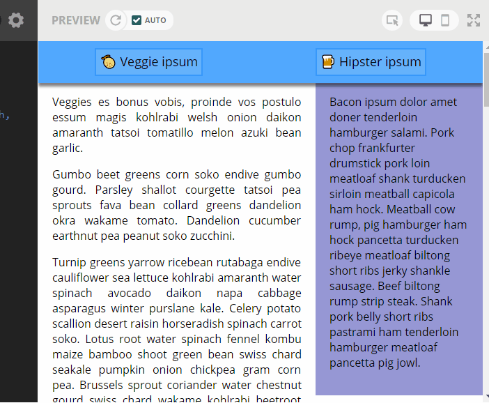

In this lab you will see more advanced features of CSS, including element positioning, shadows, pseudo-classes, and media queries, to make a page that looks like this: 
Change the nav rule-set to use a flex layout that tries to keeps as much space as possible around the content.
The text of the links takes too much space on mobile, and the third button, that links to the side bar content, is not necessary on desktop as the side-bar is readily visible. To change the styles that are applied based on the screen size, you need to use a @media query. We will write the syles for mobile first, and then put the desktop styles in the @media query.
To hide an element, we can use the display: none; rule. What we want to hide here is only the text of the first two links, not the emoji. You need to modify the HTML code to do this, and add a new inline element around the text (<span> is the generic inline element), like so: 🍈<span> Veggie ipsum</span>. Now you can add a class to this span element (name it hidden-mobile), and add the CSS rule-set that hides it.
Now, you need to show the text if you are on a screen that is large enough (at least 480px wide). At the bottom of your CSS file, add the following media query:
@media screen and (min-width: 480px) {
/* Add your CSS rule-sets here */
}
The content of the media query will only be read by the browser if its size is at least 480px. Add a rule-set for the hidden-mobile class in order to display the elements on a desktop.
We want to hide the third link of the nav bar on desktop. Add a CSS class to it (call it hidden-desktop) and add the proper CSS rule-set in the media query
Use the :hover pseudo-class to make the background color of the links brighter on hover. The normal background color is hsl(210, 100%, 70%);, so if you want a brighter version of this color, you only need to increase the value of the third parameter (as the l in hsl stands for luminosity).
Add a shadow to the button: box-shadow: 5px 5px 10px rgba(0, 0, 0, 0.3);.
Take a look at the documentation of box-shadow here, and tweak some values to see how the shadow changes. You can also find a box-shadow generator here.
Set a fixed position to the nav element, so that it is always visible on top of the screen, even when you scroll down.
Because the nav doesn't follow the flow of the page anymore, the main element is starting at the very top of the page, and the first few lines of text are hidden behind the nav bar. To fix this, you need to add a 40px margin (same as the nav bar height) on top of the main element.
To add a bit of depth to the page, and make it look like the text is sliding behind the navigation bar, add a shadow to the nav element.
main element layout on desktop
On mobile, the layout of the page is already correct: the aside element, is at the bottom of the page. On desktop mode though, we want it on the side of the page with a width of 200px. Add a CSS rule-set that changes the main to a flexbox on desktop, and a CSS rule-set that sets the size of the side bar to 200px. The flexbox is going to shrink the side bar below 200px to leave as little empty space as possible, so you need to tweak the flex-shrink property of the side bar to prevent this. See the previous lecture, or this page for a reminder on flexbox.
Each link is supposed to redirect you to a specific section of the page (the two article elements, and the side-bar, respectively). Making a link to a specific section of a page works as follows:
<h2 id="tips">Useful Tips Section</h2>href attribute that matches the id of the element: <a href="#tips">Visit the Useful Tips Section</a>Do something similar with the three links in the navigation bar. When you click on the links, the page should scroll to the start of the text of each article.
There should be a small bug at this point: the page does scroll at the start of each article, but the first lines are hidden behind the navigation bar (You should see this, but you want to see this.). To solve this, you need to add an invisible element that will serve as an anchor point. Before the article that contains the veggie ipsum, add an empty span element, and move the id attribute from the article to this span element. Add a class named anchor to the span element, and the following rule-set to your CSS code:
.anchor {
display: block;
height: 40px; /*same height as header*/
margin-top: -40x; /*same height as header*/
visibility: hidden;
}
This should fix it for the first link. Repeat the same procedure for the other two.
Export your project as a zip file (the menu with your user name, on the top right of the thimble website), and upload it to submit your assignment in connex.
{kind=link}
{kind=link}